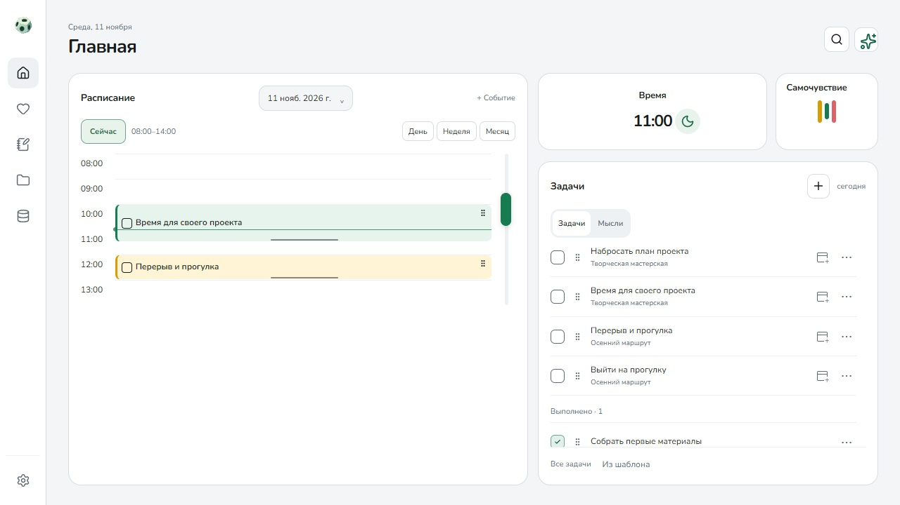
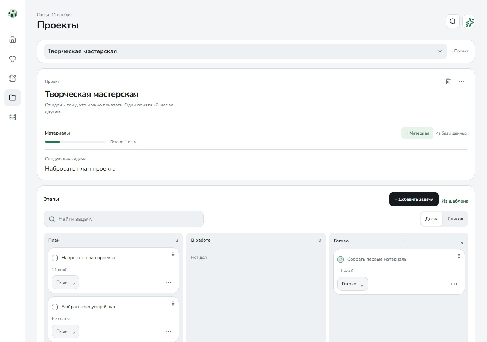
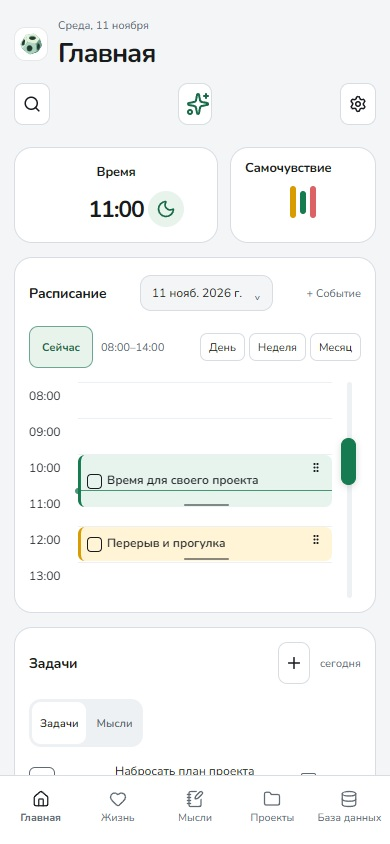

Windows
Windows 10 или 11 · 64-разрядная система (x64)Откройте EXE и следуйте шагам установщика.
Скачать Windows EXE ↓Посмотрите расписание и задачи на выбранный день.
Запишите идею сразу. К материалам проекта можно вернуться позже.
Записывайте сон, питание и самочувствие в удобном для вас темпе.
Расписание и задачи рядом. Выберите день, запланируйте дело и отметьте то, что уже получилось.
Рассмотреть интерфейс
Описание, материалы и задачи проекта собраны вместе. Мысли можно записывать и отдельно, когда они ещё не стали планом.
Рассмотреть интерфейс
На Android можно добавить на главный экран телефона виджеты расписания, задач, мыслей и питания.
Рассмотреть интерфейс
Пример интерфейса
Стабильный выпуск 0.4.48. Скачивание без регистрации.
Откройте EXE и следуйте шагам установщика.
Скачать Windows EXE ↓Откройте скачанный APK и установите приложение.
Скачать Android APK ↓После установки откройте Orvim и добавьте первую задачу на главной.
Для основных разделов не нужны аккаунт и интернет. Подключение внешних сервисов остаётся за вами.
Поделитесь впечатлениями об Orvim или задайте вопрос по почте.
Почта для отзывов и вопросов: a.baimurzinov1@gmail.com
Для публикации ошибки нужен аккаунт GitHub. Не прикладывайте личные записи и файлы с данными.